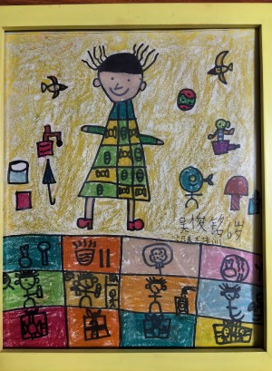

我生性腼腆，或者用比较时兴的词来说......比较傲娇？性格倒是没有多正经，但是从来不想也不敢表达自己的爱意
所以我是不是根本没有和老妈当面说过“爱你”这句话......
我也并非钝感，抑或是不知道感恩，我深知老妈这18年来付出了许多，不论是我考上中学、还是我考上大学，都有老妈在我身后默默努力着、鼓励着我
不过我确实是个很烂的人，记得很多乱七八糟的东西，记得喜欢的女孩子的生日，记得朋友的生日，甚至记得几个动漫人物的生日，却唯独不记得老妈的生日。要不是有日历提醒，我连母亲节都要忘了。
18年来，我和老妈吵的架也数不清了，从不认真学习、到学校的选择、再到生活的方方面面。我清楚老妈说的每句话都是为我好
所以，也是在母亲节当天，我做了这个网站
有个地方需要澄清好吧老妈，那天你跟我打电话的时候我已经知道是母亲节了，只是装傻罢了，毕竟要写网站捏，而且最近太忙了。
不要看很简陋，这是我一行一行搓出来的好吧！也趁机学了乱七八糟的知识
为什么域名是.top，呢当然是因为老妈是天下top1啦！当然不是因为.top比较便宜！
对啊，我还能跟老妈说什么呢？
点击图片看看？
爱你，老妈，明天见！mua!
